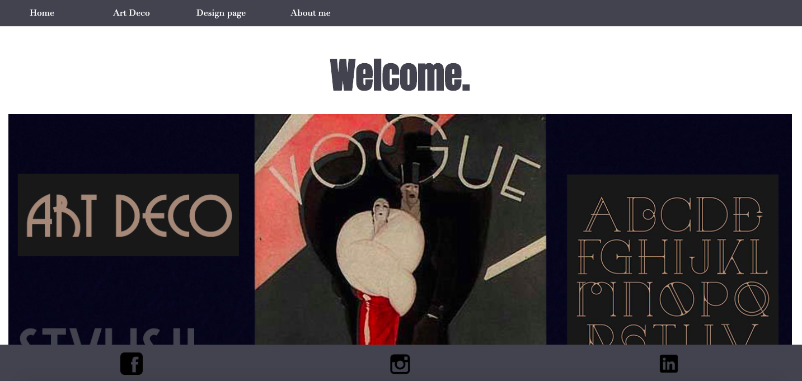
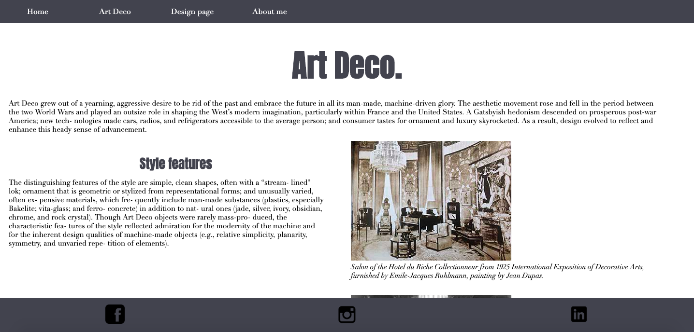

01 Basic website
In Basic Web theme we've learnt about the basic html and css code. In the first assignment we've built our first website. As our skills were limited it didn’t look quite right. While building our first website we had to keep in mind to use gestalt laws and the right colour contrasts.
What was challenging in the assignment 01.04.01. was to make the website responsive by using media queries. It was hard at first. One of the challenges was to adjust content for the mobile and then desktop version. I have learnt to keep content adjustments in mind while designing for mobile and then desktop version.

